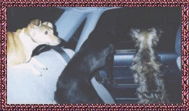
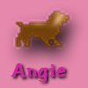
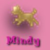
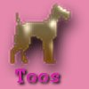
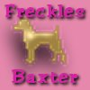

Our mum
promised us our own page after Christmas and now here we are. It's only
March still so she's doing pretty good.WOOF!!
Ok let me introduce myself
and explain to those of you who didn't see our Christmas page(shame on
you, woof!).
I am Angie,
the boss, the queen, and I am spoilt rotten, but I deserve it.
On my page you can read
how my family saved me from very nasty humans who were mean to me, and
see some pics of me being spoilt.
Then there
is my little sister Mindy. You can read how my family adopted her from
the Animal Welfare Shelter. She's still a bit of a pup.
Of course
we can't leave out the new addition to our family. Toos joined us when
one of the boys moved back home to stay. He's the youngest but the biggest.
I had some work to do to let him know I'm the boss but he's good now. Woof!!
Here's
anothe pic of the 3 of us just to show that we don't spend all our time
on beds and lounges. We also love to go for a ride in the car.Woof!!

On a more
serious note mum is also going to have a memorial page for Freckles and
Baxter who were with the family from pups and who accepted me just like
the humans did when I needed a place to be loved.
Click
on the little dogs below to come and play with us. WOOF

  
 
|